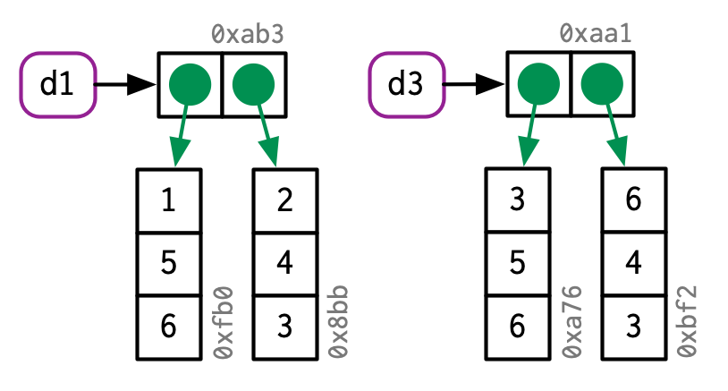
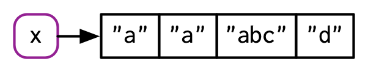

第 2 章 对象名与对象值
2.1 概述
在R中，了解对象与其名称之间的区别非常重要，这样可以帮助您：
- 更准确地预测代码的性能和内存使用情况。
- 通过避免意外复制来编写更快的代码，这是慢代码的主要来源。
- 更好地理解 R 的函数式编程工具。
本章的目标是帮助您理解对象名称和值之间的区别，以及 R 何时复制对象。
测验
回答以下问题，看看您是否可以通过本章。您可以在本章末尾的第 2.7 节中找到答案。
- 给定以下数据框，如何创建一个名为“3”的新列，其中包含
1和2的总和？ 您只能使用$，而不能使用[[。 是什么让1、2和3无法直接作为变量名？
df <- data.frame(runif(3), runif(3))
names(df) <- c(1, 2)- 在下列代码中，
y占据了多少内存？
x <- runif(1e6)
y <- list(x, x, x)- 在下面的例子中，变量
a在哪一行被复制？
a <- c(1, 5, 3, 2)
b <- a
b[[1]] <- 10题纲
- 第 2.2 节向您介绍了名称和值之间的区别，并讨论了
<-如何在名称和值之间创建绑定或引用。 - 第 2.3 节描述了 R 何时进行复制：每当您修改向量时，几乎肯定会创建一个新的、修改过的向量。您将学习如何使用
tracemem()来确定复制实际发生的时间。然后，您将探索这一能力在函数调用、列表、数据框和字符向量中的具体实现。 - 第 2.4 节探讨了前两节所涉及的对象占用内存量的一些深入问题。 由于您的直觉可能非常错误，并且
utils::object.size()这个方法计算出的结果也不准确，所以您将学习如何使用lobstr::obj_size()得到正确的结果。 - 第 2.5 节描述了修改时复制的两个重要例外：对于具有单一名称的环境和值，对象实际上是在原地修改的。
- 第 2.6 节以讨论垃圾收集器结束本章，它释放不再被名称引用的对象所使用的内存。
先决条件
我们将使用lobstr包深入研究R对象的内部实现。
library(lobstr)资源
R内存管理的细节知识并没有记录在某一篇文档里。本章中的大部分信息都是通过仔细阅读各类文档（特别是通过?Memory和?gc来查看）、编写 R扩展 (R Core Team 2018b)的内存分析部分和编写 R internals(R Core Team 2018a) 的SEXPs部分收集而来的。其余的知识我是通过阅读C源代码、进行小实验以及在R-devel上提问来掌握的。文中的任何错误都是由我造成的。
2.2 数据绑定基础
考虑下列代码：
x <- c(1, 2, 3)这句代码很容易被理解为：创建了一个名为’x’的对象，其中包含1，2，3三个值。很不幸，这种简化的表述会造成我们对R在背后所做的事情理解不深，更确切的说，这段代码做了两件事情：
- 创建了一个值向量的对象，
c(1, 2, 3) - 将这个对象绑定在一个对象名
x上
换句话说，创建一个对象或者对象的值，本身是没有名称的；而对象名称往往都绑定了一个值在上面。
为了进一步讲述这两者之间的区别，我绘制了如下图表：

x代表对象名，被一个圆角矩形包裹，它有一个箭头指向（绑定或引用）对象值，即向量c(1, 2, 3)。箭头的方向与赋值号相反：<-创建了一个右侧的对象值与左侧的对象名之间的绑定
因此，可以将名称视为对值的引用。例如，如果运行下列代码，将不会获得对象c(1, 2, 3)的另一个副本，而是获得现有对象的另一个绑定。
y <- x
您可能已经注意到，c(1, 2, 3)有一个标签0x74b，虽然向量没有名称，但我偶尔也需要不依赖名称而直接使用对象。为了实现这一点，通常我使用唯一标识符标记对象值。这些标识符有一种特殊的形式，看起来像对象的内存“地址”，即对象在内存中存储的位置。但是因为每次运行代码时实际的内存地址都会发生变化，所以我们使用这些标识符来代替。
可以使用lobstr::obj_addr()访问对象标识符，这样您可以看到x和y都指向相同的标识符。
obj_addr(x)
#> [1] "0x43663e8"
obj_addr(y)
#> [1] "0x43663e8"这些标识符很长，每次重启R的时候都会发生变化。
了解对象名称和值之间的区别可能需要一些时间，但是理解这一点对于函数式编程非常有用，因为函数在不同的上下文中可以有不同的名称。
2.2.1 命名规则
R对于对象的命名规则有着严格的规定，合法的名称 必须由字母1、数字、.和_构成，但不能以_和数字开头。此外，您不能使用任何保留字，如TRUE，NULL，if，function（通过?Reserved查看详细列表）。不遵循这些命名规则的名称是非法名称，如果您尝试使用它们，系统将报错。
_abc <- 1
#> Error: unexpected input in "_"
if <- 10
#> Error: unexpected assignment in "if <-"通过为对象名增加反引号，可以破除上述命名规则，使用任何对象名。
`_abc` <- 1
`_abc`
#> [1] 1
`if` <- 10
`if`
#> [1] 10虽然您不太可能故意创建这些疯狂的名称，但您需要了解这些疯狂的名称是如何工作的，因为您会遇到它们，最常见的情况是在加载在R之外创建的数据时。
2.2.2 习题
- 请解释下列代码中
a,b,c,d之间的关系。
a <- 1:10
b <- a
c <- b
d <- 1:10- 下面的代码以多种方式访问
mean函数。它们是否都指向相同的底层函数对象？用lobstr::obj_addr()验证这一点。
mean
base::mean
get("mean")
evalq(mean)
match.fun("mean")默认情况下，base R中的数据导入函数（如
read.csv()）将自动将非法名称转换为合法名称。为什么这可能会带来问题？什么选项允许您抑制这种行为？make.names()使用什么规则将非法名称转换为合法名称？我稍微简化了命名规则。为什么
.123e1不是一个合法名称？详细信息请阅读?make.names。
2.3 修改时复制（Copy-on-modify）
考虑下面的代码，它将x和y绑定到相同的基础对象值，然后再修改y2。
x <- c(1, 2, 3)
y <- x
y[[3]] <- 4
x
#> [1] 1 2 3修改y显然没有修改x，但x与y绑定了同一个对象，那么修改到底发生了什么？虽然与y关联的值发生了变化，但原始对象没有发生变化，相反，R创建了一个新对象0xcd2，它是0x74b对象的副本，将它的值发生改变后重新绑定至y。

这种行为被称作修改时复制，理解它会从根本上提高您对R代码的感觉，通常我们会把这种行为描述为R对象是不可变的，但是我通常会避免使用该术语，因为修改时复制的特性有几个非常重要的例外，我将在第2.5节中介绍。
当以交互方式探索“修改时复制”的行为时，请注意您将在 RStudio 中获得不同的结果，那是因为环境面板必须引用每个对象才能显示有关它的信息。这会让您对交互式探索产生误判，但不会影响函数内部的代码，因此不会影响数据分析期间的性能。对于实验，我建议直接从终端运行 R，或者使用 RMarkdown（就像本书一样）。
2.3.1 tracemem()
您可以使用base::tracemem()函数查看对象何时被复制，一旦您用一个对象调用这个函数，您会得到这个对象的当前地址：
x <- c(1, 2, 3)
cat(tracemem(x), "\n")
#> <0x7f80c0e0ffc8>从这时起，无论何时复制该对象，tracemem() 都会打印一条消息，告诉您复制了哪个对象、它的新地址以及修改时复制的调用序列：
y <- x
y[[3]] <- 4L
#> tracemem[0x7f80c0e0ffc8 -> 0x7f80c4427f40]: 如果您再次修改y，它将不会被复制。这是因为新对象现在只有一个绑定到它的对象名，所以R使用了原地修改进行优化，我们将在2.5节中详细讨论。
y[[3]] <- 5L
untracemem(x)untracemem()与tracemem()相反，它关闭对对象的追踪。
2.3.2 函数调用
修改时复制的相关规则也适用于函数调用，以下列代码为例：
f <- function(a) {
a
}
x <- c(1, 2, 3)
cat(tracemem(x), "\n")
#> <0x72ab6b8>
z <- f(x)
# there's no copy here!
untracemem(x)当f()运行时，函数内部的变量名a与函数外部变量名x指向相同的值：

您将在7.4.4节了解更多关于上图的相关知识。简而言之，函数f()由右侧的黄色对象表示，它有一个形参a，当函数运行时，它成为执行环境（灰色矩形框）中的绑定（由黑色虚线表示）。
一旦f()运行完毕，x和z将指向同一个对象，由于0x74b没有被修改，所以它不会被复制，如果f()确实修改了x，那么R将创建一个新副本，然后z将绑定该对象。

2.3.3 列表
变量名不只能指向向量值，也能指向列表，它与上面的向量非常相似：
l1 <- list(1, 2, 3)列表更为复杂，因为它不是存储值的本身，而是存储它们的引用。

这对于修改列表时非常重要：
l2 <- l1
l2[[3]] <- 4
与向量类似，列表也有修改时复制的特性；原始列表保持不变，R创建一个修改后的副本。然而，这是一个浅拷贝：即列表对象及其绑定被复制，但绑定的值没有被复制。与浅拷贝相反的是深拷贝，即每个引用的内容都被复制。在R 3.1.0版本之前，所有的拷贝都是深拷贝。
要查看跨列表的共享值，请使用lobstr::ref()函数。ref()打印每个对象的内存地址及本地ID，以便您可以轻松发现跨列表的引用值。
ref(l1, l2)
#> █ [1:0x4217278] <list>
#> ├─[2:0x49ee9f0] <dbl>
#> ├─[3:0x49ee9b8] <dbl>
#> └─[4:0x49ee980] <dbl>
#>
#> █ [5:0x72c2548] <list>
#> ├─[2:0x49ee9f0]
#> ├─[3:0x49ee9b8]
#> └─[6:0x75e20e0] <dbl>2.3.4 数据框
数据框是向量列表，因此在修改数据框时，修改时复制的特性会产生重要影响。以这个数据框为例：
d1 <- data.frame(x = c(1, 5, 6), y = c(2, 4, 3))
如果修改了一列，只有那一列发生了修改时复制，其他列仍将指向其原始的引用：
d2 <- d1
d2[, 2] <- d2[, 2] * 2
如果修改了一行，每列值都被修改，这就意味着每列值被发生了修改时复制：
d3 <- d1
d3[1, ] <- d3[1, ] * 3
2.3.5 字符向量
R语言最后一个使用引用的地方是字符向量3，我通常用如下的方式表达字符向量：
x <- c("a", "a", "abc", "d")
但这只是示意，事实上R使用一个全局字符串池，字符向量中的每个元素都是指向池中唯一字符串的指针:

您可通过调用character参数设置为TRUE的ref()函数来显示这些引用。
ref(x, character = TRUE)
#> █ [1:0x71c0af8] <chr>
#> ├─[2:0x10b3e20] <string: "a">
#> ├─[2:0x10b3e20]
#> ├─[3:0x8558770] <string: "abc">
#> └─[4:0x1274688] <string: "d">这种设计对于字符向量使用的内存量有很大的影响，但在其它方面无关紧要，因此在本书的后续章节，我在画图的时候依然会把字符串画在向量内部。
2.3.6 习题
为什么运行
tracemem(1:10)没有意义？解释一下为何下列代码运行
tracemem(x)后出现两条拷贝信息？提示：认真查看这个代码与前面章节中的代码不同之处。
x <- c(1L, 2L, 3L)
tracemem(x)
x[3] <- 4- 绘制以下对象之间的关系图。
a <- 1:10
b <- list(a, a)
c <- list(b, a, 1:10)- 当运行下列代码时，会发生什么？
x <- list(1:10)
x[[2]] <- x2.4 对象大小
您可以通过lobstr::obj_size()4函数查看一个对象占用了多少内存。
obj_size(letters)
#> 1,712 B
obj_size(ggplot2::diamonds)
#> 3,456,344 B由于列表的元素是对值的引用，因此列表的大小可能比您预期小的多：
x <- runif(1e6)
obj_size(x)
#> 8,000,048 B
y <- list(x, x, x)
obj_size(y)
#> 8,000,128 By只比x大80个字节5，这是一个包含三个元素的空列表的大小：
obj_size(list(NULL, NULL, NULL))
#> 80 B类似的,因为R使用全局字符串池，所以字符向量占用的内存比您预期的少：重复字符串100次并不会使它占用100倍的内存。
banana <- "bananas bananas bananas"
obj_size(banana)
#> 136 B
obj_size(rep(banana, 100))
#> 928 B引用的存在使得估计单个对象的大小变得比较困难，如果没有共享值，obj_size(x) + obj_size(y)将等于obj_size(x, y)，如下列代码所示，x与y组合的大小等于y单独的大小。
obj_size(x, y)
#> 8,000,128 B最后，R 3.5.0之后的版本提供了一个令人兴奋的能力：ALTREP，即替代形式(alternative representation)。这种特性允许R采用:这种非常紧凑的方式表示向量，这种方式用存储向量的起始值与结束值代替存储每个值，这意味着不论您的向量有多少个值，它都拥有相同的大小。
obj_size(1:3)
#> 680 B
obj_size(1:1e3)
#> 680 B
obj_size(1:1e6)
#> 680 B
obj_size(1:1e9)
#> 680 B2.4.1 习题
- 在下面的例子中，为何
object.size()与object_size()的结果有巨大的差异？请阅读object_size()的文档寻找答案。
y <- rep(list(runif(1e4)), 100)
object.size(y)
#> 8005648 bytes
object.size(y)
#> 8005648 bytes- 以下面的列表为例，为什么它的大小与想的不一样？
funs <- list(mean, sd, var)
obj_size(funs)
#> 17,608 B- 预测以下代码的输出结果。
a <- runif(1e6)
obj_size(a)
b <- list(a, a)
obj_size(b)
obj_size(a, b)
b[[1]][[1]] <- 10
obj_size(b)
obj_size(a, b)
b[[2]][[1]] <- 10
obj_size(b)
obj_size(a, b)2.5 原地修改（Modify-on-place）
正如我们在上面看到的那样，修改R对象通常会创建一个副本，但这里有两个例外：
- 单一绑定对象可获得特殊的性能优化。
- 环境是一种特殊类型的对象，它总是在原地修改。
2.5.1 单一绑定对象
如果对象只被一个对象名绑定，R将原地修改这个变量：
v <- c(1, 2, 3)
v[[3]] <- 4
（请注意对象ID：v始终绑定在同一对象上，0x207。）
有两个复杂因素使得预测R何时开展性能优化变得有难度：
说到绑定，R目前只能按0，1或多个来计数。这就意味着，假如一个对象拥有2个绑定，当一个消失时，引用计数不会回到1：多个减去1还等于多个。反过来就说明R有时会在不需要的时候进行复制。
当您调用绝大多数函数的时候，它都会为对象创建引用，唯一的例外是专门编写的“原始”C函数。这些只能由R的核心开发团队编写，并且主要出现在base包中。
总之，这两种复杂的情况使得预测是否会产生副本变得很难，因此用tracemem()函数来判断是很好的经验。
让我们通过使用for循环的案例研究来探索其中的微妙之处，for循环在R中是比较慢的，这种慢通常是由于循环的每次迭代都会创建一直副本造成的。考虑下面的代码，经从一个大型数据框的每一列减去一个值：
x <- data.frame(matrix(runif(5 * 1e4), ncol = 5))
medians <- vapply(x, median, numeric(1))
for (i in seq_along(medians)) {
x[[i]] <- x[[i]] - medians[[i]]
}这个循环运行的非常慢，因为每次迭代都会复制数据框，您可以使用tracemem()函数来监控运行：
cat(tracemem(x), "\n")
#> <0x7f80c429e020>
for (i in 1:5) {
x[[i]] <- x[[i]] - medians[[i]]
}
#> tracemem[0x7f80c429e020 -> 0x7f80c0c144d8]:
#> tracemem[0x7f80c0c144d8 -> 0x7f80c0c14540]: [[<-.data.frame [[<-
#> tracemem[0x7f80c0c14540 -> 0x7f80c0c145a8]: [[<-.data.frame [[<-
#> tracemem[0x7f80c0c145a8 -> 0x7f80c0c14610]:
#> tracemem[0x7f80c0c14610 -> 0x7f80c0c14678]: [[<-.data.frame [[<-
#> tracemem[0x7f80c0c14678 -> 0x7f80c0c146e0]: [[<-.data.frame [[<-
#> tracemem[0x7f80c0c146e0 -> 0x7f80c0c14748]:
#> tracemem[0x7f80c0c14748 -> 0x7f80c0c147b0]: [[<-.data.frame [[<-
#> tracemem[0x7f80c0c147b0 -> 0x7f80c0c14818]: [[<-.data.frame [[<-
#> tracemem[0x7f80c0c14818 -> 0x7f80c0c14880]:
#> tracemem[0x7f80c0c14880 -> 0x7f80c0c148e8]: [[<-.data.frame [[<-
#> tracemem[0x7f80c0c148e8 -> 0x7f80c0c14950]: [[<-.data.frame [[<-
#> tracemem[0x7f80c0c14950 -> 0x7f80c0c149b8]:
#> tracemem[0x7f80c0c149b8 -> 0x7f80c0c14a20]: [[<-.data.frame [[<-
#> tracemem[0x7f80c0c14a20 -> 0x7f80c0c14a88]: [[<-.data.frame [[<-
untracemem(x)事实上，每次迭代不止复制的一次数据框，也不止是两次，而是三次。[[.data.frame先生成了两个副本，然后又生成了一个6，因为[[.data.frame是一个常规函数，它会增加x的引用计数。
我们可以通过使用列表而不是数据框来减少副本复制的数量，修改列表使用的是内部C函数，因此不会增加引用计数，只生成一个副本：
y <- as.list(x)
cat(tracemem(y), "\n")
#> <0x7f80c5c3de20>
for (i in 1:5) {
y[[i]] <- y[[i]] - medians[[i]]
}
#> tracemem[0x7f80c5c3de20 -> 0x7f80c48de210]: 虽然不难发现何时产生了副本，但却很难阻止它。如果您发现自己在使用一些奇异的技巧避免产生复制，那可能是时候用C++重写您的函数了，这些内容我们将在第25章中讲述。
2.5.2 环境
您将在第7章学习更多与环境相关的知识，但在这里提及它们十分重要，因为它们的行为与其它对象的行为不同：环境总是在适当的地方进行修改。这种属性有时被成为引用语义，因为当您修改环境时，所有这个环境中的所有绑定将继续保持相同的引用。
如同下列这个绑定到e1和e2的环境：
e1 <- rlang::env(a = 1, b = 2, c = 3)
e2 <- e1
如果我们改变了绑定，环境也就地修改。
e1$c <- 4
e2$c
#> [1] 4
这个特性可以用于创建“可记住”先前状态的函数，更多的信息请见10.2.1。这个特性实现了R6面向对象系统，这将在第14章详细介绍。
这样做的一个重要结果是环境可以包含自己：
e <- rlang::env()
e$self <- e
ref(e)
#> █ [1:0x5916dd8] <env>
#> └─self = [1:0x5916dd8]
这是环境对象唯一的属性。
2.5.3 习题
- 解释一下为何下列代码没有创建一个循环列表
x <- list()
x[[1]] <- x将上述两个减中位数的方法包装成两个函数，调用
bench包比较两个方法的速度。随着列数增加，性能如何变化？如果您尝试在环境中使用
tracemem()函数会发生什么？
2.6 对象解绑与垃圾收集
考虑下列代码：
x <- 1:3
x <- 2:4
rm(x)
我们创建了两个对象，但等到代码运行完毕后，没有一个对象绑定到了对象名。这些对象如何被删除？这个工作交给了垃圾收集器，简称GC。GC释放那些已经被删除的对象所占用的内存，并在需要时从操作系统请求更多内存。
R使用追踪式垃圾收集器，这意味着它会跟踪可以从全局环境7访问的每个对象，以及可从这些对象上访问的所有对象（即可递归搜索的列表与环境中的引用）。垃圾收集器不使用上述原地修改引用计数，虽然垃圾收集器与引用计数是密切相关的，但内部数据结构针对不同用例进行了优化。
每个R需要更多内存来创建新对象时，垃圾收集器(GC)就会自动运行，从外部来看，基本上没法预测GC何时运行。事实上，你也不应该尝试预测。如果您想知道GC何时运行，请调用gcinfo(TRUE)，GC将在每次运行时向控制台打印一条消息。
可以通过调用gc()函数来强制垃圾收集，这一点您可以已经在其它地方有所了解，但您永远不需要这么做。调用gc()的唯一原因可能是要求R将内存返回到操作系统，以便其他程序可以使用它，或者是告诉您当前使用了多少内存，这其实是一个额外的作用：
gc()
#> used (Mb) gc trigger (Mb) max used (Mb)
#> Ncells 855070 45.7 1645301 87.9 1645301 87.9
#> Vcells 4962720 37.9 17010142 129.8 17009272 129.8lobstr::mem_used()函数是gc()的包装器，用于打印使用字节的总数：
mem_used()
#> 87,591,776 B这个数字与您操作系统显示的可能不一样，主要是由下列三个原因造成的：
它包括由R创建的对象，但不包括由R解释器创建的对象。
R和操作系统都是惰性的：它们都是到了真正需要的时候才会回收内存。因此R可能会占用内存，因为操作系统还未要求它返回。
R统计对象占用的内存，但可能会因为删除的对象而存在空白。这个问题称为内存碎片化。
2.7 测试题答案
- 你必须使用反引号
`引用非法名称：例如，例如变量1,2,3。
df <- data.frame(runif(3), runif(3))
names(df) <- c(1, 2)
df$`3` <- df$`1` + df$`2`- 它大约占用8Mb。
x <- runif(1e6)
y <- list(x, x, x)
obj_size(y)
#> 8,000,128 B- 当
b发生修改时，a会复制。即在b[[1]] <- 10这一行发生复制。
参考文献
R Core Team. 2018a. “R Internals.” R Foundation for Statistical Computing. https://cran.r-project.org/doc/manuals/r-devel/R-ints.html.
R Core Team. 2018b. “Writing R Extensions.” R Foundation for Statistical Computing. https://cran.r-project.org/doc/manuals/r-devel/R-exts.html.
另人惊讶的是，字母的组成取决于您计算机的语言环境，这意味着R代码可以在不同计算机上有所不同，而且在一台计算机上工作的文件甚至不能在另一台计算机上解析。应通过尽可能多地使用ASCII字符（即A-Z）来避免这个问题。↩︎
您可能会惊讶的看到
[[符号可以用于获取向量的子集，我们会在4.3章节详细讨论这个问题，现在您只需要使用[[去获取或者设置单个元素值就好。↩︎字符向量其实是字符串向量，不只是单个字符。↩︎
请注意
utils::object.size()函数，它没有考虑共享引用，将导致返回值过大。↩︎如果您运行的是32位的R，您看到的大小将有所不同。↩︎
这些都是浅拷贝，它们只是复制了每个列的引用，而不是列的内容，其实性能没有那么差，但也不是最好的方法。↩︎
以及当前调用堆栈上的每个环境。↩︎